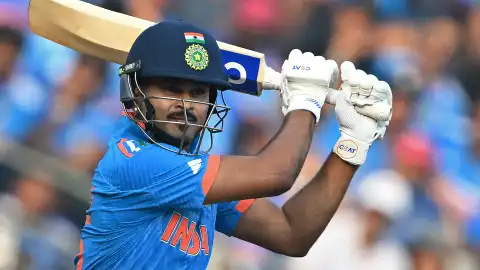
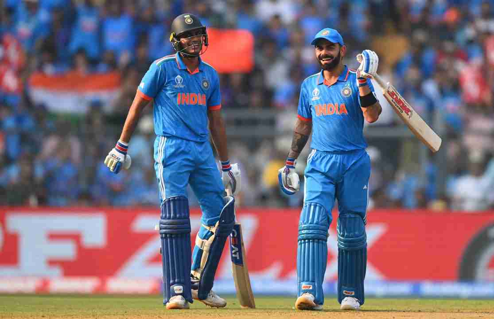

Pacers wreck Sri Lanka to send India into the semifinal
India's pace trio of Jasprit Bumrah, Mohammed Siraj and Mohammed Shami came up with a sensational performance with the new ball to wreck Sri Lanka.
SL managed to get just a few more to roll over for 55 and crash to an embarrassing 302-run loss.
Venue: Wankhede Stadium, Mumbai


Sri Lanka won the toss and opt to Bowl.
Madhushanka one of the top bowler of this WC edition gets the dangerous in form Captain Rohit in the very first over of the match.
Gill (92) and Kohli (88) had played the wonderful innings.
Shreyas Iyer (82) had played mamooth innings where he set the stage on fire.
Iyer, Gill and Kohli fire as India set Sri Lanka daunting target.
Sri Lankan Madushanka clinched a five-fer.
Shami (5 wkts) and Siraj (3 wkts) trashed SL innings to 55.